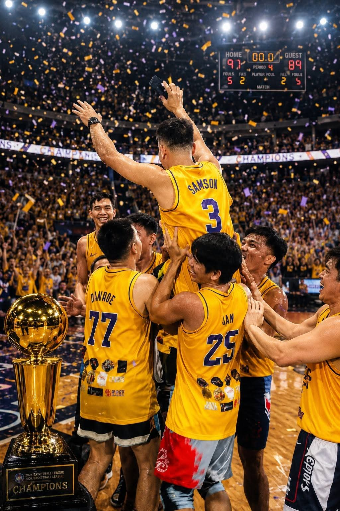
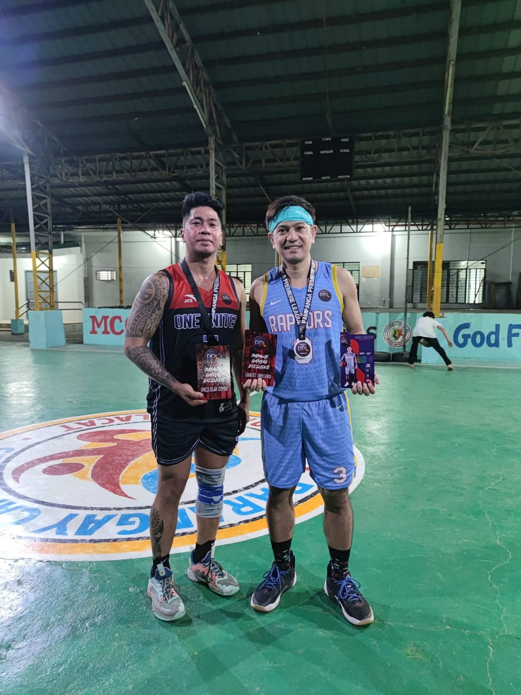
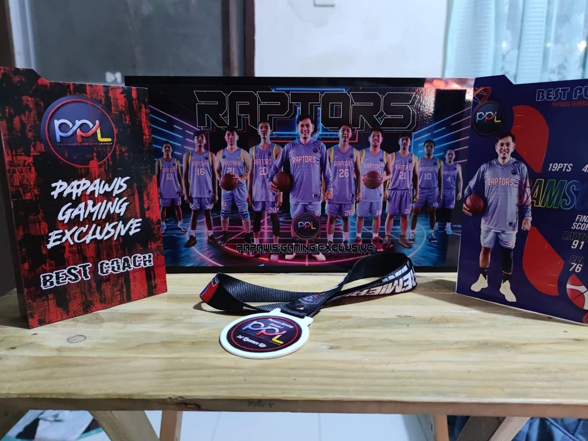
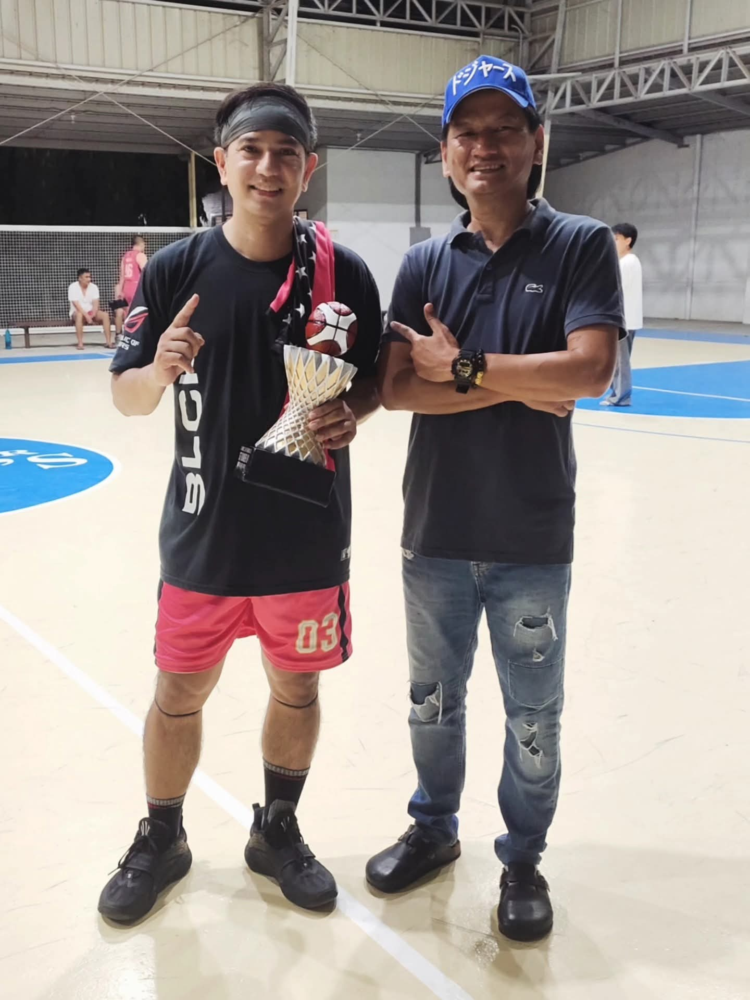
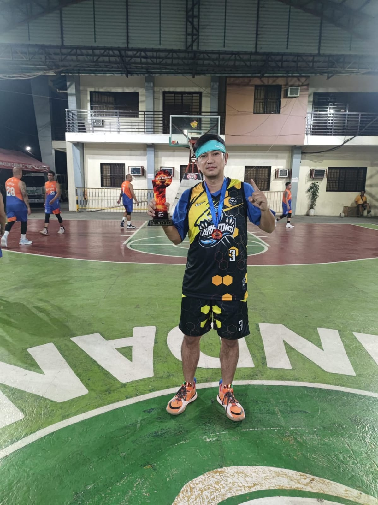
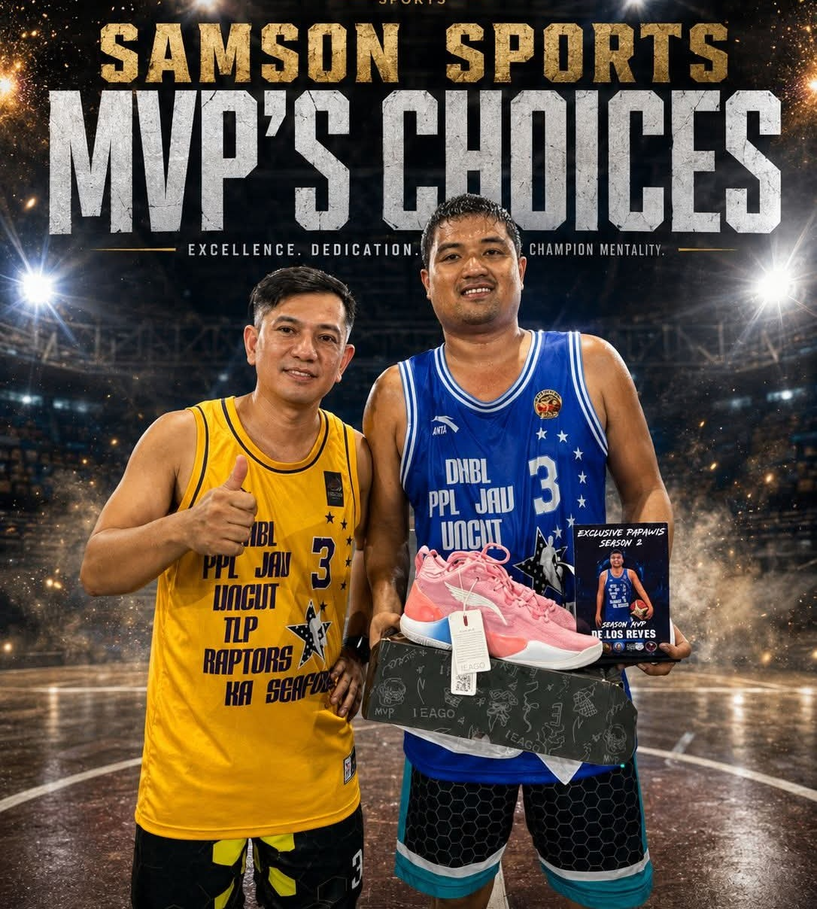

Raptors Archive
The Moments That Matter.
A premium gallery built around the five fresh photos you supplied, with selected Raptors archive images retained to tell a fuller story of competition, awards, teammates and community.
9 featured moments







